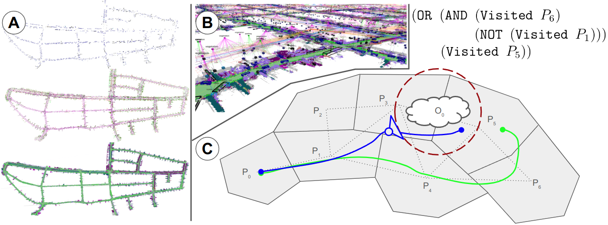
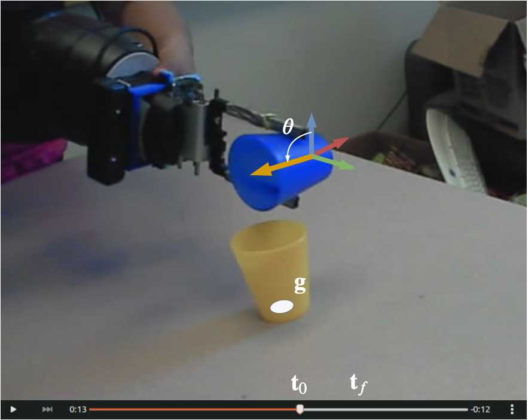
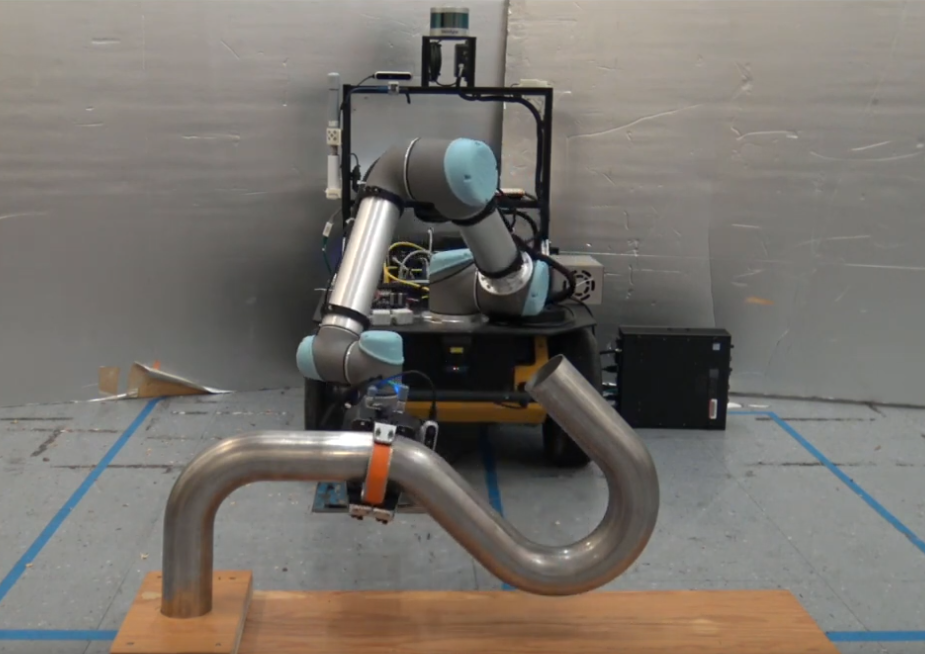
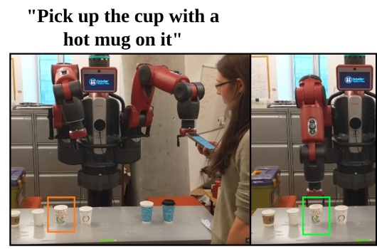
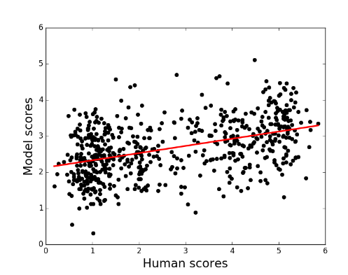
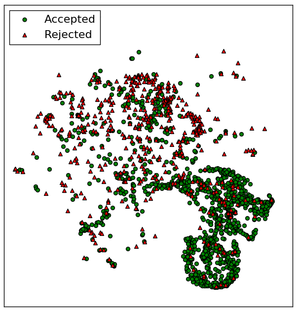
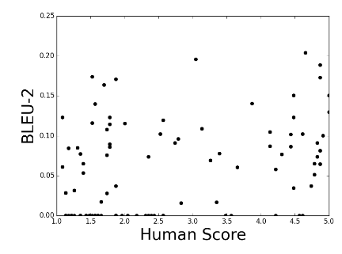

|
Christopher Bradley I am a graduate student in the Robust Robotics Group at MIT. I am interested in enabling autonomous robots to act intelligently, particularly in the context of planning hierarchically in the presence of uncertainty. Specifically, I work on developing/learning representations to enable long-horizon decision making for multi-modal problems in partially observable, real-world domains. Before MIT, I studied Mechanical Engineering at the California Institute of Technology. |

|
Research |
|  |
Task and Motion Planning in Hierarchical 3D Scene Graphs
Christopher Bradley*, Aaron Ray*, Luca Carlone, Under Review An approach for task and motion planning in large environments using Hydra Scene Graphs. Paper |

|
Learning Feasibility and Cost to Guide TAMP
Christopher Bradley, ISER 2023 Accelerating Task and Motion Planning using learned models of feasibility and cost to guide search. Paper |
|
Visual Prediction of Priors for Articulated Object Interaction
Caris Moses*, Michael Noseworthy*, Leslie Kaelbling, Tomás Lozano-Pérez, Nicholas Roy ICRA 2020 Efficient manipulation of articulated objects using visual priors to infer kinematic parameters. Paper / Talk / Code / Website |
|
|  |
Task-Conditioned Variational Autoencoders for Learning Movement Primitives
Michael Noseworthy, Rohan Paul, Subhro Roy, Daehyung Park, CORL 2019 Learning interpretable movement primitives from demonstration. Paper |
|  |
Inferring Task Goals and Constraints using Bayesian Nonparametric Inverse Reinforcement Learning
Daehyung Park, Michael Noseworthy, Rohan Paul, Subhro Roy, CORL 2019 Learning from demonstration in the presence of complex constraints. Paper |
|  |
Leveraging Past References for Robust Language Grounding
Subhro Roy*, Michael Noseworthy*, Rohan Paul, Daehyung Park, CoNLL 2019 Natural language grounding in situated and temporally extended contexts. Paper |
|  |
Towards an Automatic Turing Test: Learning to Evaluate Dialogue Responses
Ryan Lowe*, Michael Noseworthy*, Iulian Vlad Serban, Nicolas Angelard-Gontier, ACL 2017 Automatic metric for dialogue model response evaluation. Paper / Code / Talk |
|  |
Predicting Success in Goal-Driven Human-Human Dialogues
Michael Noseworthy, SIGDIAL 2017 Automatic success prediction for task-driven dialogue systems. Paper |
|  |
How NOT To Evaluate Your Dialogue System: An Empirical Study of Unsupervised Evaluation Metrics for Dialogue Response Generation
Chia-Wei Liu*, Ryan Lowe*, Iulian Vlad Serban*, Michael Noseworthy*, EMNLP 2017 A study of how common automatic metrics for evaluating dialogue responses correlate with human judgement. Paper / Talk |
Miscellanea |
 |
Inclusion@CoRL Organizer, CoRL 2020
Queer in AI Organizer, RSS 2021 Queer in AI Organizer, CoRL 2021 |
|
Website template from Jon Barron. |